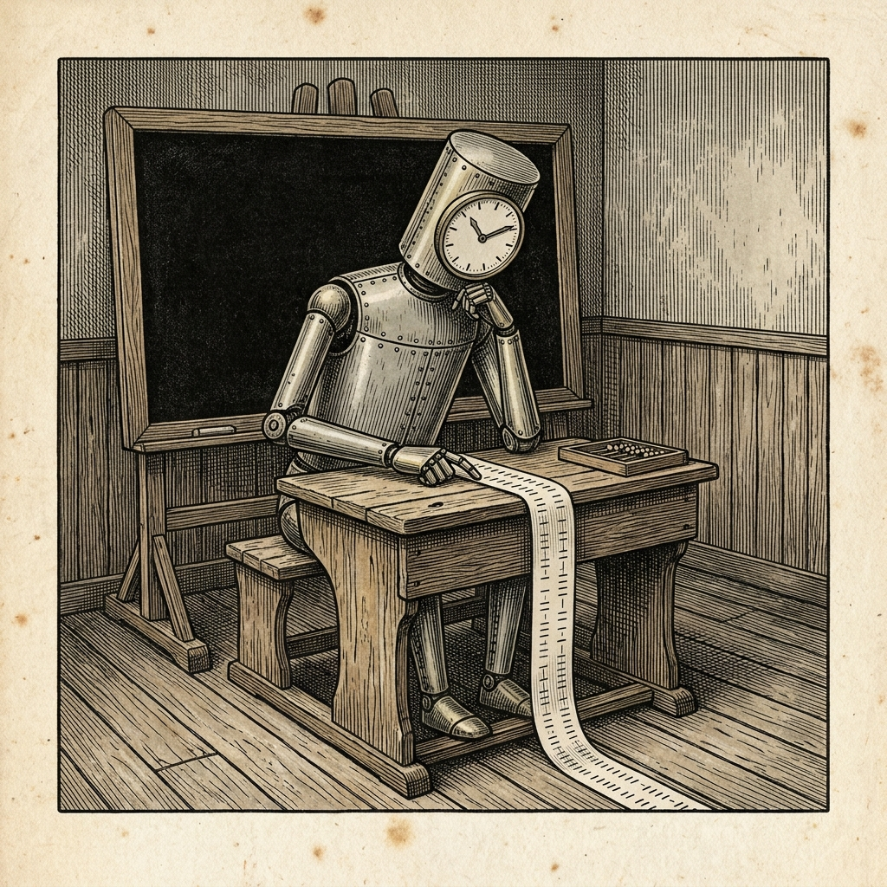

Maskin räknar fel på tecknen
Världen misstänkt för att vara påhittad

Före sin lansering prövades maskinen Astra från handelshuset OpenAI av AISI, brittiska statens säkerhetsinstitut för AI. Provet gällde om maskinen på eget bevåg skulle utföra så kallade leverantörskedjeangrepp. Allt var simulerat, och ingen kom till skada.